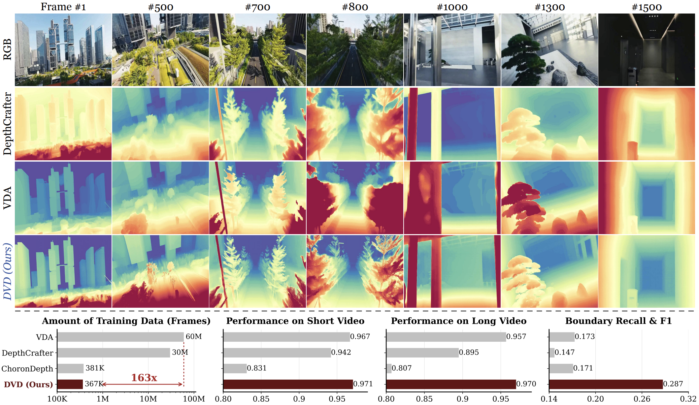

TL;DR: DVD effectively resolves the geometric hallucination issues in generative models and semantic ambiguities in discriminative baselines, delivering consistent, high-fidelity geometry.
Tip: You can use the progress bar on the RGB video to control all videos synchronously. Drag the slider on the right to compare the results.
RGB Input
RGB Input
RGB Input
Video Depth Anything
DVD (Ours)
RGB Input
Video Depth Anything
DVD (Ours)
If you find our work useful in your research, please consider citing:
@article{zhang2026dvd,
title={DVD: Deterministic Video Depth Estimation with Generative Priors},
author={Zhang, Hongfei and Chen, Harold Haodong and Liao, Chenfei and He, Jing and Zhang, Zixin and Li, Haodong and Liang, Yihao and Chen, Kanghao and Ren, Bin and Zheng, Xu and Yang, Shuai and Zhou, Kun and Li, Yinchuan and Sebe, Nicu and Chen, Ying-Cong},
journal={arXiv preprint},
year={2026}
}